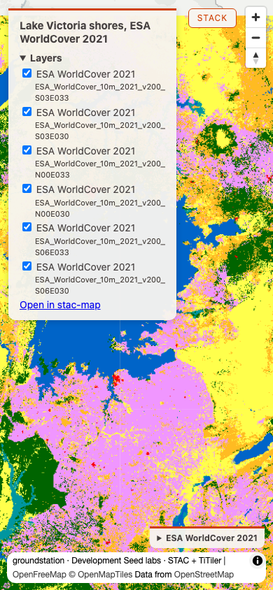

Round 1: the factors under the number, and the name and credit on a phone (stops 28 to 30)
1
claims on the stack
insurance catastrophe adjuster
Input
Rolling Fork, Mississippi was hit by the March 24, 2023 tornado. Show me before and after, and tell me what data this came from.
Our read
Rolling Fork gives the same NDVI as field test 16, 0.198 before and 0.2274 after (delta 0.0294, 14.8%), and the result now names the scaling factors for both dates.
Learning → Fixed.
 swipe: Rolling Fork NDVI with the adjuster's notes ↗
swipe: Rolling Fork NDVI with the adjuster's notes ↗
full read
Our read
Rolling Fork gives the same NDVI as field test 16, 0.198 before and 0.2274 after (delta 0.0294, 14.8%), and the result now names the scaling factors for both dates. The data is Sentinel-2 L2A tile 15SXS, S2A_15SXS_20230219_0_L2A before (cloud 45.558468) and S2B_15SXS_20230326_0_L2A after (cloud 0.767861, 2 days after the tornado). Both after and before carry band_scaling: scale 0.0001 and offset 0 with declared_offset -0.1 on 24 bands including nir, scale 0.001 on aot, scale 0.001 unit cm on wvp. The scaling_note says one clause per date: scale 0.0001 and offset 0 applied for 2023-03-26 and for 2023-02-19, and for each Earth Search already took the -0.1 offset out of its pixels. The means could not move against field test 16: a normalized difference is a ratio, so the scale cancels, and the -0.1 offset is already in the pixels of both of these 2023 scenes, so nothing is left for compare_dates to add. The note names no date where the offset is still in the pixels, so I cannot say what a pre-2022 scene would show from this run. An NDVI mean over the whole box still says nothing about the damage track.show the data
compare_dates(bbox=[-90.95, 32.86, -90.8, 32.96], window_before="2023-02-15T00:00:00Z/2023-03-23T23:59:59Z", window_after="2023-03-25T00:00:00Z/2023-04-01T23:59:59Z", max_cloud_cover=50, label="Rolling Fork NDVI", stack_facts={"geocoded": "nominatim", "adjuster": "claim file RF-2023-0324"}, out_path="docs/img/ft17-place-rolling-fork.html", notes=["Claim event: EF4 tornado, 2023-03-24, NWS Jackson", "Track hand-drawn from the damage survey, not from this imagery"])
tile: 15SXS
after : S2B_15SXS_20230326_0_L2A 2023-03-26 cloud 0.767861 mean 0.2274 covers_aoi_pct 100.0
runner_up: S2B_15SYS_20230326_0_L2A 2023-03-26 cloud 7.874347 covers_aoi_pct 41.1
before: S2A_15SXS_20230219_0_L2A 2023-02-19 cloud 45.558468 mean 0.198 covers_aoi_pct 100.0
runner_up: S2A_15SYS_20230219_0_L2A 2023-02-19 cloud 13.800161 covers_aoi_pct 41.1
delta: 0.0294 delta_pct: 14.8 expression: (nir-red)/(nir+red)
map_path: docs/img/ft17-place-rolling-fork.html
clipped_to: [-90.95, 32.86, -90.8, 32.96]
scaling_applied: true
after.band_scaling: scale 0.001 offset 0 on 2 bands (aot, aot-jp2); scale 0.0001 offset 0, declared_offset -0.1 on 24 bands (blue, coastal, green, nir, nir08, and others); scale 0.001 offset 0 unit cm on 2 bands (wvp, wvp-jp2)
before.band_scaling: scale 0.001 offset 0 on 2 bands (aot, aot-jp2); scale 0.0001 offset 0, declared_offset -0.1 on 24 bands (blue, coastal, green, nir, nir08, and others); scale 0.001 offset 0 unit cm on 2 bands (wvp, wvp-jp2)
scaling_note: "scale 0.0001 and offset 0 applied for 2023-03-26 (Earth Search already took the -0.1 offset out of its pixels); scale 0.0001 and offset 0 applied for 2023-02-19 (Earth Search already took the -0.1 offset out of its pixels)"
caveat: ["cloud may be driving this delta (before scene S2A_15SXS_20230219_0_L2A 46%, threshold 20%). Cloud pushes a normalized index toward zero."]
notes: ["Claim event: EF4 tornado, 2023-03-24, NWS Jackson", "Track hand-drawn from the damage survey, not from this imagery"]
stack_facts_ignored: ["geocoded", "adjuster"]
note: stack_facts takes provenance flags only (events, weather, passes, terrain, snapshot; geocoded is kept only for a bbox geocode returned, with the source it returned); put free text in notes
Learning → Fixed. Field test 16 said "Scaling is applied, but the factors are not named in the default compare_dates result", with "no scaling_note, and no scale or offset values in this result". Now the default compare_dates result carries
band_scaling under both after and before (scale 0.0001, offset 0, declared_offset -0.1 on 24 bands, plus the aot and wvp scales) and a scaling_note with one clause per date: "scale 0.0001 and offset 0 applied for 2023-03-26 (Earth Search already took the -0.1 offset out of its pixels); scale 0.0001 and offset 0 applied for 2023-02-19 (Earth Search already took the -0.1 offset out of its pixels)". The factors no longer need an apply_scaling=False run or a compute_statistics call to be read. The means 0.2274 and 0.198 and the delta 0.0294 are unchanged from field test 16, as the note's offset clause and the ratio predict. The same card still shows the stop 21 caveat naming scene S2A_15SXS_20230219_0_L2A at 46% against a 20% threshold, stack_facts_ignored returning geocoded and adjuster, and both notes strings in the result. Not checked this run: the apply_scaling=False path, the out_path outside the repo, how many times each note string lands on the page, a scene older than 2022, and a non-ratio expression.stop 28 band_scaling on after and before · stop 28 scaling_note with one clause per date · declared_offset -0.1 already in the pixels · stop 21 cloud caveat at 46% against 20% · geocoded and adjuster in stack_facts_ignored · notes returned
2
legend at phone width, again
geographer
Input
Land cover around the shores of Lake Victoria, with a legend.
Our read
The call that failed as shipped in field test 16 now succeeds with no patch, the six layers read "ESA WorldCover 2021" with the tile id beside them, and at 390 px the Development Seed…
Learning → Fixed.

map: Lake Victoria, ESA WorldCover 2021, with legend (clean call, no patch) ↗full read
Our read
The call that failed as shipped in field test 16 now succeeds with no patch, the six layers read "ESA WorldCover 2021" with the tile id beside them, and at 390 px the Development Seed credit is no longer a separate box: it sits inside the attribution bar's own text. search_imagery found 6 scenes, all from 2021-01-01, covering 100.0% of the area (best single scene 47.0%), and render_map wrote the page with no KeyError. At 390 by 844 the Layers fold is closed on load and opens on a tap. The #credit div is display none; the attribution bar is the same box as before (left 10, top 790, right 380, bottom 834, 370 by 44) and its text now begins "groundstation · Development Seed labs · STAC + TiTiler". At 1280 by 800 the credit div shows (left 12, top 759, right 384.5, bottom 776), and the attribution bar (left 857.8, top 766, right 1270, bottom 790) reads "MapLibre | OpenFreeMap ..." without the credit text.show the data
search_imagery("planetary-computer", ["esa-worldcover"], bbox=[31.6, -3.1, 34.9, 0.6], datetime_range="2021-01-01T00:00:00Z/2021-12-31T23:59:59Z", limit=10)
count: 6 recommended: 6 scene_ids from 2021-01-01, covers_aoi_pct 100.0 (best single scene covers 47.0%)
full_coverage_set: date 2021-01-01, union_covers_aoi_pct 100.0
render_map("Lake Victoria shores, ESA WorldCover 2021", bbox=[31.6, -3.1, 34.9, 0.6], [coverage_set layer, assets ["map"], colormap_name "esa-worldcover"], out_path="docs/img/ft17-victoria-landcover.html")
Both calls ran in-process from groundstation.tools at 0.52.0, once each, no patch, no layer name. No error.
map_path: docs/img/ft17-victoria-landcover.html
layers: ["ESA WorldCover 2021 · ESA_WorldCover_10m_2021_v200_S03E033", "ESA WorldCover 2021 · ESA_WorldCover_10m_2021_v200_S03E030", "ESA WorldCover 2021 · ESA_WorldCover_10m_2021_v200_N00E033", "ESA WorldCover 2021 · ESA_WorldCover_10m_2021_v200_N00E030", "ESA WorldCover 2021 · ESA_WorldCover_10m_2021_v200_S06E033", "ESA WorldCover 2021 · ESA_WorldCover_10m_2021_v200_S06E030"]
state.layers name / detail: name "ESA WorldCover 2021", detail "ESA_WorldCover_10m_2021_v200_S03E033" (and the same name for the other 5 tiles); tiles URLs use mosaic/pc1..
legend: title "ESA WorldCover 2021", 11 classes (10 Tree cover ... 100 Moss and lichen)
Playwright, headless Chromium, viewport set before load, 6 s load plus 1 s after tap:
390 x 844:
details.fold (Layers) open on load: False; after a tap on its summary: True
panel rows (6): "ESA WorldCover 2021" with the tile id as detail: S03E033, S03E030, N00E033, N00E030, S06E033, S06E030
#credit: display none, box 0,0,0,0
.maplibregl-ctrl-attrib: left 10, top 790, right 380, bottom 834 (370 x 44)
attribution text: "groundstation · Development Seed labs · STAC + TiTiler | OpenFreeMap © OpenMapTiles Data from OpenStreetMap"; contains "Development Seed labs": True
1280 x 800:
#credit: display block, left 12, top 759, right 384.5, bottom 776
attribution: left 857.8, top 766, right 1270, bottom 790; text "MapLibre | OpenFreeMap © OpenMapTiles Data from OpenStreetMap"; contains "Development Seed labs": False
details.fold open on load: True
screenshots: docs/img/ft17-victoria-390.png, docs/img/ft17-victoria-390-open.png, docs/img/ft17-victoria-1280.png
Learning → Fixed. Field test 16 said the call "fails as shipped with KeyError 'id'", that each layer read "2021-01-01" and not the collection plus date, and that at 390 px the credit (803 to 820) is a "credit inside the attribution box on both axes" (bar 790 to 834). On 0.52.0 the same two calls ran once each with no patch and no layer name and returned a page: no KeyError, and the tiles come from mosaic ids of the form pc1.<digits>.<hash>, so the searchid read works for esa-worldcover. All 6 layers read "ESA WorldCover 2021" with the tile id as the detail line. At 390 by 844 the credit div is hidden (display none) and its text is the start of MapLibre's attribution bar, so it cannot sit on the data credits; the bar is the same 370 by 44 box as before. At 1280 by 800 the credit div still shows and the attribution bar does not carry it, so the wide layout is unchanged. The viewport was set before the page loaded. Not checked: a real phone, widths between 390 and 500, whether the longer attribution text wraps to a third line on a narrower phone, and other collections whose register answer may differ.
clean call, no KeyError (PR 92) · layers named "ESA WorldCover 2021" with tile id (stop 29) · credit folded into the attribution bar at 390 px (stop 30) · Layers fold closed on load · credit div and plain attribution at 1280 px
Reproduce
git clone https://github.com/dannybauman/groundstation && cd groundstation
bash scripts/doctor.sh # walks the setup chain, prints the fix
uv run evals/unit_checks.py # 199 offline checks
uv run scripts/field_test.py docs/field-test-2026-10-26-no17.cases.json